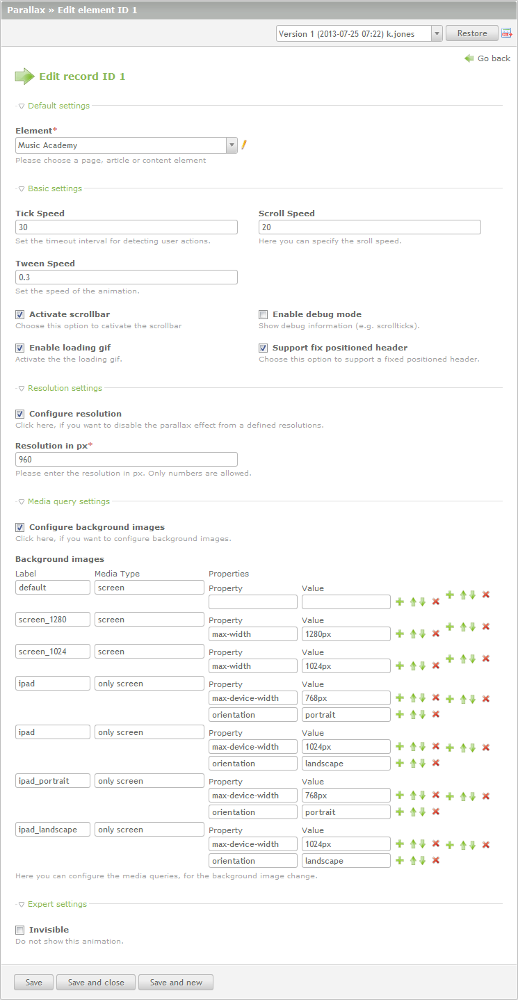
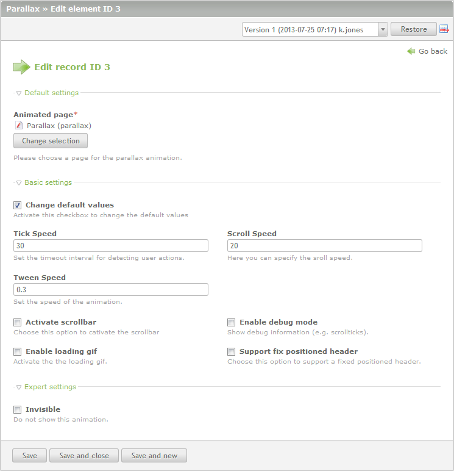

Über Parallax
Parallax ist eine auf jQuery basierende Contao Extension und funktioniert so wie Du es von Contao gewohnt bist. Übersichtlich, schlank und für jeden zu verstehen. Zum Start unterstützen wir eine große Anzahl an Browsern und Betriebssystemen.
Du benötigst etwas Erfahrung im Umgang mit HTML(5) und CSS(3), aber keine Kenntnisse in JavaScript bzw. jQuery. Parallax für Contao ist schlank im Aufbau, mächtig in der Funktion. Und bei einfachster Bedienbarkeit lässt es jeden Freiraum für Deine Ideen und Kreativität.
Systemvoraussetzungen
- Contao 2.9.x oder höher
- jQuery 1.7.2 oder höher
Einfache Startup-Anleitung
- Installiere die Erweiterung
- Erstelle Deine Standard-Theme und Layout
- Aktiviere "jQuery" im Layout
- Füge Seiten zum Seitenbaum hinzu
- Füge so viele Artikel in Deine Seite ein, wie Du animieren möchtest
- Füge ein paar Inhaltselemente in Deine Artikel ein
- Gehe in den Parallax Menüeintrag
- Füge ein neues Element ein, wähle Deine Root-Seite und setzen die Option "Scrollbar aktivieren"
- Fügen ein weiteres Element hinzu und wähle die normale Seite unter "Animationsseite" aus
- Füge die beinhaltenden Artikel auf dieser Seite hinzu. Setze die Animationsdauer für den Anfang auf einen Wert von z.B. 500
- Die Animation für den Artikel ist nun aktiv
- Animierende Elemente sollten mit position:absolute platziert werden, position:relative nur in Ausnahmefällen einsetzen
Benötigter HTML-Quelltext
Die Parallax Extension benötigt ein festes Grundgerüst an Elementen, ID's und Klassen die für einen sauberen Betrieb der Extension nicht verändert werden dürfen. Ganz wichtig ist, das Contao auch weiterhin ID's und Klassen dynamisch platzieren kann. Es sollten daher diese Bereiche der Artikel- und Inhaltselement-Templates nicht angepasst werden.
Beispiel einer eigenen Animation
Versionshistorie
1.2.0
- Volle Contao 3.1 Unterstützung
- Entfernung nicht mehr notwendiger jQuery Abhängigkeiten in Contao 3
- Fehlerbehebung der Scrollbar, wenn der letzte Artikel eine dynamische Höhe hat
- Konfiguration von Einschränkungen der Redakteure hinzugefügt
- Entfernung des Infotexts und Hilfswizard für den schnellen Wechsel zwischen Parallax und Contao Elementen hinzugefügt
- Unterstützung von fix positionierten Headern mit neuer Berechnung, Sprungmarkern und mehr
- Aufsplittung der Javascript Konfiguration in verschiedene Module für eine bessere Performance, eine höhere Flexibilität und als Vorbereitung der zwei Lizenzen "Lite" und "Pro"
- Entfernung der Navigation, der horizontalen Slides und responsiver Unterstützung in der Lite Version
- Repository für Pro-Module wie "parallaxHorizontal", "parallaxImagePicker", "parallaxNavigation" and "parallaxResolution" hinzugefügt
- Minimierung von Javascript Code aus der Parallax Extension
- Fehlerbehebung von kopierten Parallax-Elementen und falsch zugewiesenen ID's
- Kleinere Korrekturen und DCA-Optimierungen
1.1.0
- Anpassungen für Contao 3.0
- Entfernung der Templateauswahl in der Parallax Navigation
- Fehlerbehebung der falschen Höhenberechnung - dynamische Artikel mit padding und box-sizing:border-box
1.0.1
- Optimierung der Tastatur-Unterstützung
- Auslieferung einer Parallax CSS mit allen notwendigen Styles
- Konfiguration der Ladegrafik im Backend
- Entfernung der Parallax Klasse im Body
- Entfernung der Scrollbar wenn Parallax nicht mehr aktiv ist
- Optimierung der Tastaturbefehle in Browsern kleiner als IE8
Screenshots
Parallax - Seitenbaum

Parallax - Konfiguration des Startpunkts
Parallax - Konfiguration der Seite
Parallax - Konfiguration des Artikels

Parallax - Konfiguration des Inhaltselements

Konfiguration des Artikels